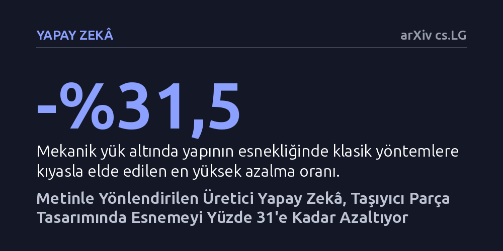

YAPAY-ZEKA · arXiv cs.LG · 2026-09-12
Araştırmacılar, görsel üreten yapay zekâ modellerinin doğadaki dayanıklı desen bilgisini parça tasarım simülasyonlarına aktarıp aktaramayacağını inceledi. Ortaya çıkan yöntem, klasik mühendislik optimizasyonuna kıyasla mekanik esnemeyi yüzde 31,5'e varan oranda azaltarak daha rijit yapılar oluşturdu.
Mühendislerin karmaşık matematiksel formüller yerine doğrudan doğal dille talimat vererek doğadan ilham alan, daha hafif ve sağlam yapılar tasarlayabileceğini gösteriyor.

Yaprak damarları, süngerimsi kemik dokusu ve örümcek ağları gibi doğada milyonlarca yıllık evrimle şekillenen yapılar, birim kütle başına olağanüstü yüksek bir rijitlik sunar. Mühendisler hafif ve mukavemetli parçalar geliştirmek için uzun süredir topoloji optimizasyonu adı verilen algoritmaları kullansa da, bu klasik matematiksel yaklaşımlar doğadaki gibi karmaşık ve organik geometrileri nadiren yakalayabilir.
Öte yandan, mühendislerin kendi tasarım sezgilerini veya doğal dildeki niyetlerini bu matematiksel denklemlere aktarabilmesinin doğrudan bir yolu bugüne kadar yoktu. Milyonlarca görselle eğitilmiş modern difüzyon modelleri ise doğadaki bu biçimsel kalıpları derinlemesine bilir, fakat fizik kurallarından ve yük taşıma dinamiklerinden tamamen habersizdir. Araştırmacılar, yapay zekânın bu biçimsel hafızasını doğrudan fizik döngüsünün içine yerleştirmeyi hedefledi.
Araştırma ekibi, sıfırdan pahalı bir yapay zekâ eğitmek yerine, dondurulmuş bir metin-görsel difüzyon modelini temel tasarım bilgisi kaynağı olarak kullandı. Skor damıtma örneklemesi (SDS) yöntemiyle, mühendisin sisteme girdiği bir metin istemi doğrudan makine tarafından yorumlanabilen biçimsel bir yönlendiriciye dönüştürüldü.
Yöntemin asıl gücü, yapay zekânın önerdiği biçimsel gradyanların her yinelemede sonlu elemanlar analizinin sunduğu fiziksel hassasiyetlerle harmanlanmasından gelir. Bu kurguda yapay zekâ yalnızca tasarım fikirleri öne sürer; hangi ayrıntıların kalıcı olacağına ve hangi malzemelerin silineceğine doğrudan fiziksel denklemler karar verir. Ayrıca yapay zekânın neden olduğu belirsiz ara yoğunluklar özel bir matematiksel filtreyle temizlenerek doğrudan bilgisayar destekli tasarıma (CAD) hazır hâle getirildi.
Dört farklı geometri alanı ile mekanik ve termoelastik olmak üzere iki fiziksel rejimde gerçekleştirilen 245 simülasyon, yöntemin başarısını somutlaştırdı. İncelenen 49 istem ve geometri kombinasyonunun 38'inde, parçanın esnekliğini gösteren uyarlık değerinde istatistiksel olarak anlamlı düşüşler elde edildi. Geleneksel optimizasyon yöntemlerine kıyasla mekanik yük altında yüzde 31,5'e, termoelastik rejimde ise yüzde 23,0'a varan oranda daha rijit yapılar üretildi.
Geometrik analizler, yapay zekânın kaburga iskeletinde yük taşımayan ve kör çıkmaz oluşturan gereksiz dalları etkili bir şekilde bastırdığını ortaya koydu. Uç nokta sayısı ile yapısal esneklik arasındaki güçlü korelasyon (+0,56 ile +0,99), bu ölü dalların budanmasının dayanıklılığı doğrudan artıran ana mekanizma olduğunu gösterdi.
Elde edilen sonuçlar, genel amaçlı görsel yapay zekâlarının fiziksel kısıtlar altında tutulduğunda ciddi bir mühendislik asistanına dönüşebileceğini kanıtlıyor. Model her yeni problemde sıfırdan eğitilmeye gerek duymaksızın; yükleme koşulları, geometri ve fizik hedefleri değiştikçe sadece metin komutu güncellenerek yeniden kullanılabiliyor.
Buna karşın, yöntemin endüstriyel üretime geçebilmesi için simülasyonların ötesine geçilmesi gerekiyor. Bilgisayar ortamında elde edilen bu umut verici kaburga tasarımlarının eklemeli imalatla üretilip gerçek mekanik ve termal testlere tabi tutulması, yaklaşımın pratik geçerliliğini doğrulamak adına sonraki en kritik adım olacaktır.